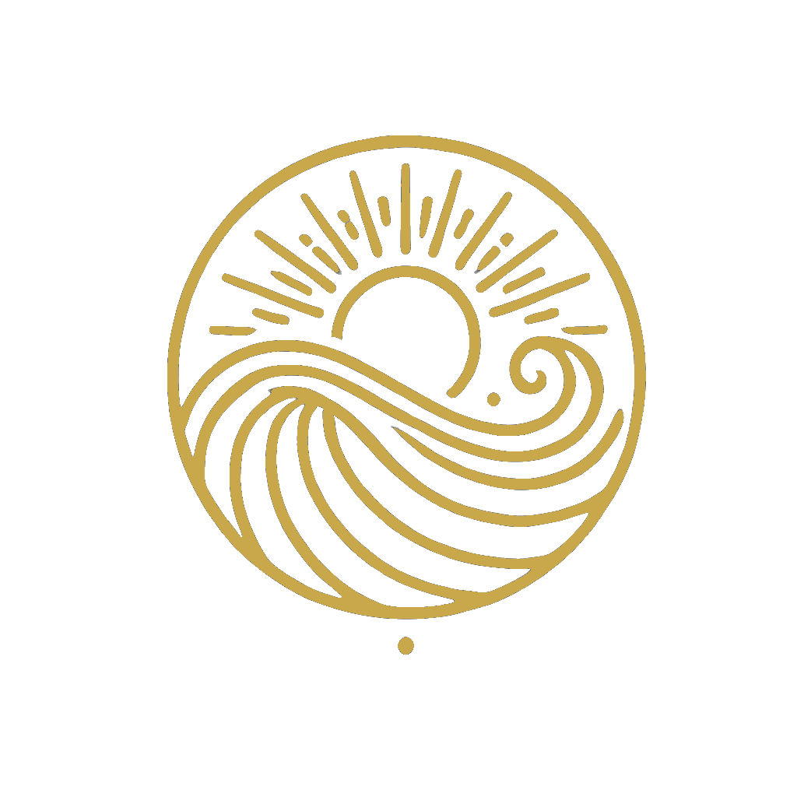

Amber L Garcia
I bring clarity to complex environments, align leaders around what matters most, and create momentum across teams navigating complexity, growth, and change.
About
I'm a Senior Director with a decade-long track record at Experian, where I've led enterprise transformation, built operating systems from scratch, and helped organizations evolve into more adaptive, outcome-focused ways of working.
I amplify what's already working, orchestrate across functions, and help organizations move with greater focus, adaptability, and confidence — especially during periods of rapid change, AI-driven disruption, and operating model evolution.
My work lives at the intersection of portfolio strategy, delivery orchestration, change leadership, and governance design. I don't just build frameworks — I build the conditions for organizations to actually use them.
Current Role
Senior Director, Head of Portfolio Delivery & Strategic Transformation · Experian
Education
MBA · UCLA Anderson School of Management
BS Organizational Leadership · Biola University
Certifications
PMP · Project Management Institute
PROSCI Change Management
Working Genius Facilitator · Patrick Lencioni
Location
Orange County, CA
What I Do
01
End-to-end portfolio systems, planning, staffing alignment, and execution visibility — with measurement frameworks that connect delivery activity to strategic outcomes and business value.
02
Cross-functional coordination across large, matrixed organizations — reducing friction, clarifying ownership, and driving consistent execution momentum at scale across dozens of teams.
03
Driving transformation toward product and outcome-oriented ways of working through Agile, Team Topologies, and OKR practices — including AI-augmented workflow adoption and organizational readiness.
04
Designing the forums, operating rhythms, decision rights, and leadership reporting structures that enable high-velocity delivery across complex, interdependent delivery systems.
Career
June 2025 – Present
Experian Consumer Services, North America · Costa Mesa, CA
Leading enterprise-wide portfolio management, delivery orchestration, operating model evolution, and governance design across a 1,500-person org with an eight-figure initiative portfolio spanning 5 product domains and 45–65 cross-functional teams.
April 2023 – June 2025
Experian Consumer Services, North America · Costa Mesa, CA
Brought in to reset and rebuild how the organization planned, prioritized, and delivered. Redesigned quarterly planning, drove executive alignment to a single prioritized initiative list, and introduced the SVPG Product Operating Model and Team Topologies frameworks.
2018 – 2023
Experian Consumer Services, North America · Costa Mesa, CA
Part of the founding operating team that scaled Experian Marketplace from proof of concept to an eight-figure, multi-vertical growth business — now the growth engine of the D2C division spanning credit cards, personal loans, and insurance.
2015 – 2018
Experian Consumer Services, North America · Costa Mesa, CA
Core delivery lead on Experian Boost — recognized as North America Product Launch of the Year — and orchestrated cross-functional delivery for Experian CreditWorks, reaching 1M+ installs.
2012 – 2015
Football.com / Three Point Productions · Mission Viejo, CA
Early-stage operating and program management experience at a privately funded sports startup.
2005 – 2012
First American / CoreLogic · Santa Ana, CA
Seven-year arc from legal coordinator to Agile project manager in real estate data and analytics.
Download my resume for the complete career story, scope details, and key accomplishments.
Contact
Whether you're looking for a senior transformation leader or want to bring Working Genius facilitation to your team — I'd love to connect. Reach out and let's explore what's possible.

When people understand how they're naturally designed to contribute, work gets lighter, clearer, and more impactful.
Using Patrick Lencioni's Working Genius system, I help teams improve communication and collaboration while helping individuals better understand where they thrive, how they create value, and what environments bring out their best work.
Perfect for leadership teams, organizational change, career clarity, and role alignment.
Book a Discovery Call